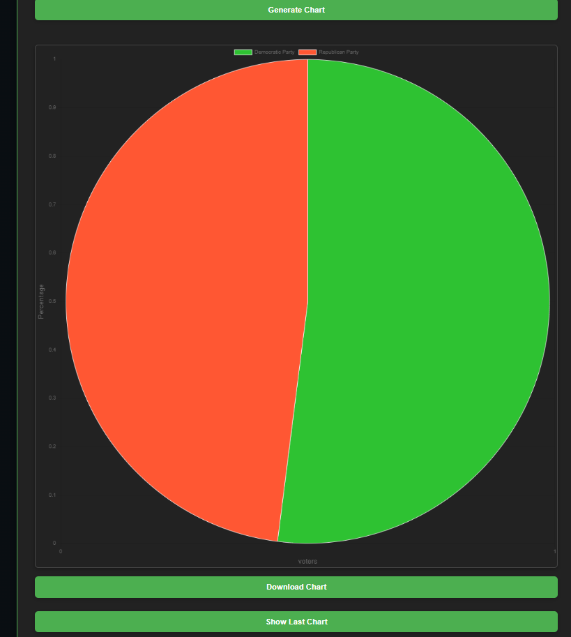
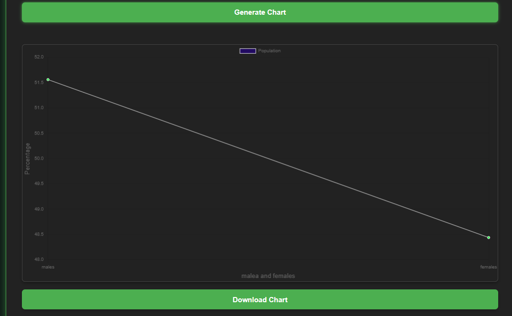

This tool allows you to create customizable, interactive charts and perform data analysis. Whether you are working with sales data, election statistics, or any other dataset, this platform makes visualizing your data easy and insightful.
To create your chart:
We've added new chart types and advanced data analysis features, including real-time data insights, moving averages, and outlier detection. Keep an eye on upcoming updates for even more powerful tools!
prompt:Generate a chart showing the voter percentage for Democratic and republician parties in 2024 US elections
Whether you're a business analyst, a student, or a researcher, our platform provides the tools you need to create clear, impactful charts and gain valuable insights from your data. Here’s why:
Graphs and charts are essential tools in decision-making, helping visualize data in a way that makes trends, outliers, and patterns more apparent. Here’s how graphs are used in different fields:
Graphs are widely used in business to represent financial data, sales performance, market trends, and growth predictions. Managers use these charts to analyze profit margins, costs, and operational efficiency, allowing for informed decision-making and forecasting.
In education, graphs help illustrate complex data, making learning and presentations more engaging. Research papers and scientific studies also rely heavily on graphs to present findings, comparisons, and experimental results.
Healthcare professionals use graphs to track patient data, monitor health trends, and display medical statistics. Visual representations of patient history, test results, and treatments help in diagnosing and making treatment decisions.
Marketing teams use graphs to visualize customer behavior, campaign performance, and market research. This helps them identify patterns and refine strategies for customer engagement and sales conversions.
Data scientists and engineers use graphs to analyze large datasets, detect anomalies, and present data in a clear format for stakeholders. Graphs help in visualizing machine learning models, algorithm performance, and system metrics.
Check out some of the recent charts generated using our platform:
Prompt:population of mens and womens in percentage in India in 2024
